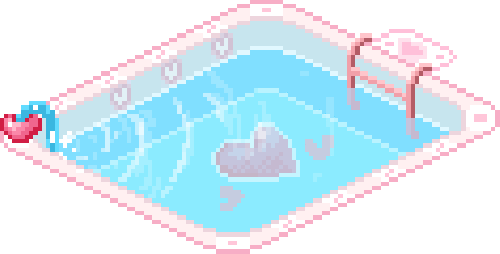

Welcome to
Repositorie
What have I been up to??
At the moment I am working on using Node.js to my websites, so that it can pick data up from databases. I've also been tinkering with making reactive buttons, search features, and making this whole site!! Hopefully you'll be seeing some cool stuff on here soon xD This site is still a work in progress! Please be gentle <3

❤
